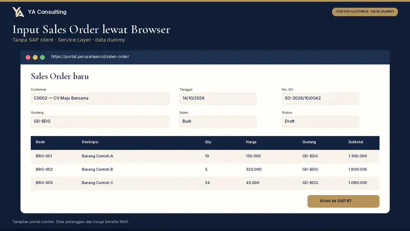
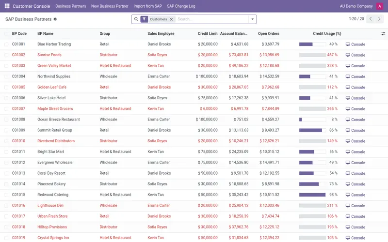
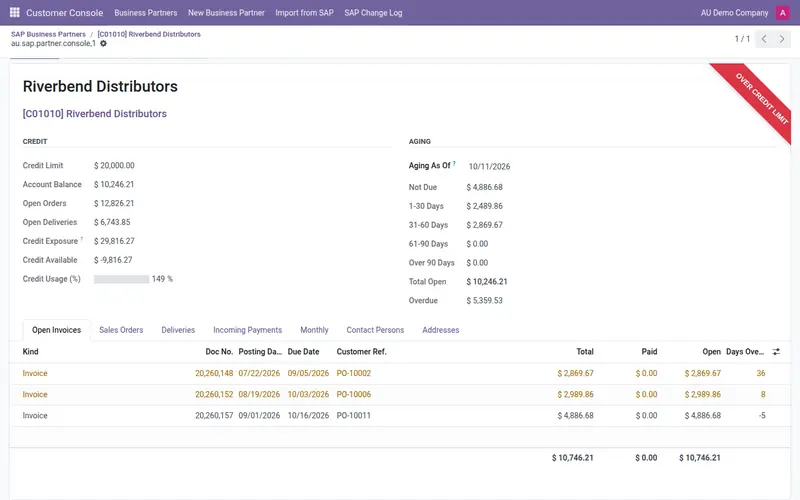
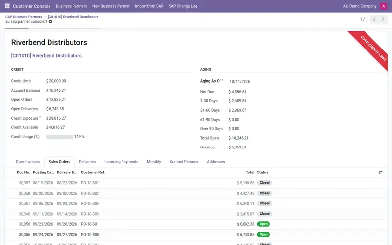
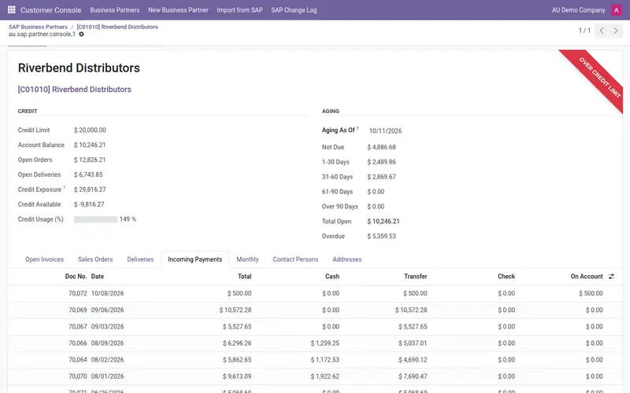
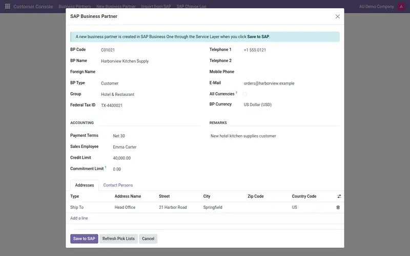
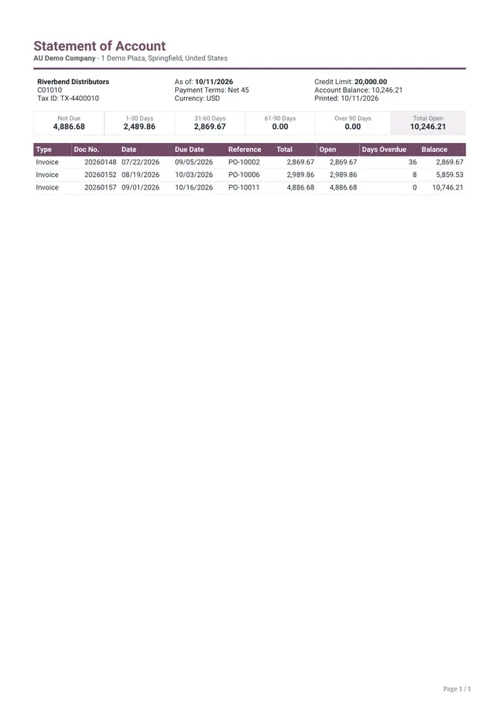
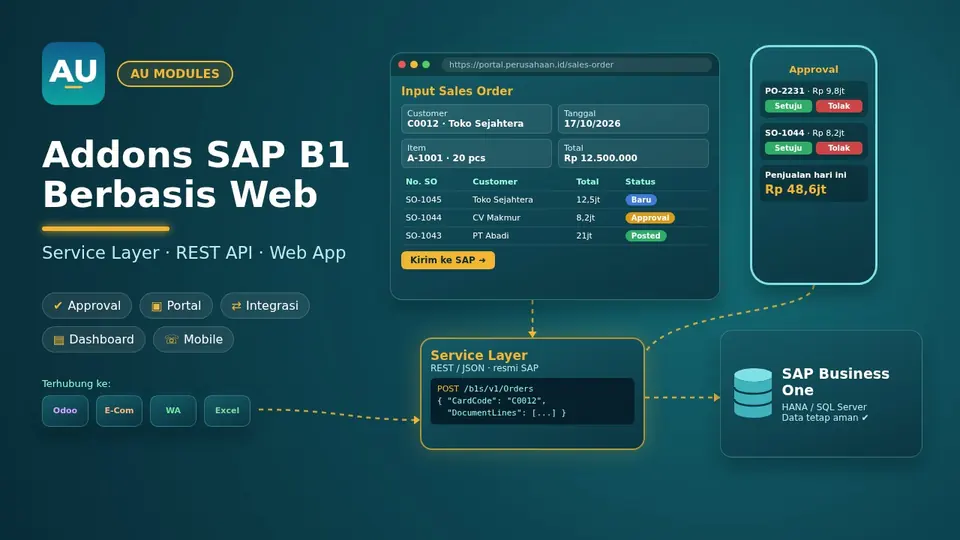

Jasa & Layanan
Integrasi & Addons Web SAP Business One via Service Layer
Sambungkan SAP B1 dengan Odoo atau aplikasi lain lewat Service Layer dan SQL: sinkron customer, invoice, stok. Input SO/PO, dashboard, dan upload Excel ke SAP B1 lewat browser atau HP, tanpa install SAP client.
Mulai Rp5.000.000 · harga final sesuai ruang lingkup
Ringkasan
Sambungkan SAP B1 dengan Odoo atau aplikasi lain lewat Service Layer dan SQL: sinkron customer, invoice, stok. Input SO/PO, dashboard, dan upload Excel ke SAP B1 lewat browser atau HP, tanpa install SAP client. Semua angka di halaman ini adalah harga mulai; saya kunci harga final di penawaran tertulis setelah scope jelas.
Fitur yang Anda dapat
- Koneksi resmi lewat Service Layer (REST/JSON), data tetap di SAP B1
- Sinkron master data dan dokumen: business partner, item, invoice, stok, dan objek lain sesuai kebutuhan
- Arah satu arah atau dua arah, dengan log perubahan dan penanganan error
- Portal web untuk input Sales Order atau Purchase Order dari browser atau HP, tanpa SAP client
- Upload Excel/CSV ke SAP B1 dengan validasi sebelum posting
- Konsol mitra di Odoo: lihat limit kredit, aging, open order, dan statement
- Hak akses per user, sehingga staf lapangan tidak perlu lisensi SAP client
- Uji di database demo atau company test sebelum masuk ke produksi
Contoh layar
Klik gambar untuk memperbesar. Layar memakai data demo atau ilustrasi berlabel data dummy — bukan data klien.


Ilustrasi input Sales Order lewat browser, lalu dikirim ke SAP B1 (data dummy).

Daftar business partner SAP yang tampil di konsol Odoo (AU Demo Company).

Aging piutang dan open invoice di konsol mitra (data demo).

Sales order terbuka dari SAP, dibaca lewat integrasi (data demo).

Pembayaran masuk yang tersinkron dari SAP (data demo).

Buat atau perbarui business partner dari Odoo ke SAP (data demo).

Statement pelanggan yang dihasilkan dari data SAP (data demo).

Ringkasan layanan: Service Layer, portal, dan integrasi ke Odoo atau aplikasi lain. Modul AU SAP Partner di Odoo Apps — contoh jembatan Odoo dan SAP B1.
Paket & harga
Satu arah, satu objek
mulai Rp5.000.000Misalnya customer atau invoice, dari SAP ke sistem lain (atau sebaliknya).
Web input SO/PO
mulai Rp10.000.000Form input di browser yang menulis ke SAP B1 lewat Service Layer.
Sinkron dua arah, multi objek
mulai Rp20.000.000Beberapa objek, dua arah, plus log dan penanganan selisih.
Harga mulai, final sesuai jumlah objek, arah sinkron, dan kompleksitas aturan bisnis.
Skema kerja
Pertanyaan singkat
Apakah harga di halaman ini sudah final?
Belum. Angka di situs adalah harga mulai. Harga final saya kirim lewat penawaran tertulis setelah ruang lingkup (scope) disepakati.
Bagaimana cara mulai?
Cukup DM saya di Threads untuk konsultasi gratis. Setelah kebutuhan jelas, saya buatkan ringkasan scope dan penawaran tertulis.
Apa yang termasuk support 3 bulan?
Perbaikan bug dari pekerjaan yang sudah diserahkan, pertanyaan pemakaian, dan penyesuaian kecil. Perubahan lingkup baru dihitung terpisah.
Apakah ada biaya langganan bulanan?
Untuk pengerjaan jasa, tidak ada biaya langganan. Support ringan 3 bulan sudah termasuk. Maintenance tahunan bersifat opsional, sekitar 15–20% per tahun. Untuk aplikasi custom, biaya hosting dihitung terpisah jika Anda ingin saya yang kelola.
Apakah staf harus install SAP client?
Tidak, untuk skenario portal web. User cukup buka browser. SAP client tetap dipakai tim finance atau admin yang memang membutuhkannya.
Mau bahas kebutuhan Anda?
Konsultasi gratis. Cukup DM saya di Threads. Saya balas dengan pertanyaan ringkas, lalu penawaran tertulis bila lingkupnya sudah jelas.
DM @yohanesandy.erp